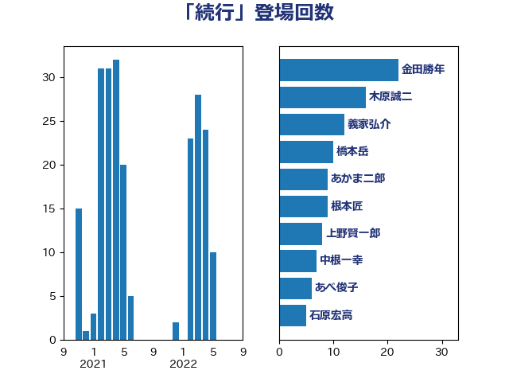

単語「続行」

| 金田勝年 | 自由民主党 | 22 回 |
| 木原誠二 | 自由民主党 | 16 回 |
| 義家弘介 | 自由民主党 | 12 回 |
| 橋本岳 | 自由民主党 | 10 回 |
| あかま二郎 | 自由民主党 | 9 回 |
| 根本匠 | 自由民主党 | 9 回 |
| 上野賢一郎 | 自由民主党 | 8 回 |
| 中根一幸 | 自由民主党 | 7 回 |
| あべ俊子 | 自由民主党 | 6 回 |
| 石原宏高 | 自由民主党 | 5 回 |
| 赤羽一嘉 | 公明党 | 5 回 |
| 越智隆雄 | 自由民主党 | 5 回 |
| 鈴木馨祐 | 自由民主党 | 5 回 |
| 永岡桂子 | 自由民主党 | 4 回 |
| 薗浦健太郎 | 自由民主党 | 4 回 |
| 城内実 | 自由民主党 | 3 回 |
| 上田清司 | 国民民主党 | 2 回 |
| 中谷真一 | 自由民主党 | 2 回 |
| 今枝宗一郎 | 自由民主党 | 2 回 |
| 古屋範子 | 公明党 | 2 回 |
| 平口洋 | 自由民主党 | 2 回 |
| 後藤祐一 | 立憲民主党 | 2 回 |
| 稲津久 | 公明党 | 2 回 |
| 葉梨康弘 | 自由民主党 | 2 回 |
| 西村康稔 | 自由民主党 | 2 回 |
| 阿部知子 | 立憲民主党 | 2 回 |
| 青山周平 | 自由民主党 | 2 回 |
| 高鳥修一 | 自由民主党 | 2 回 |
| 伊東良孝 | 自由民主党 | 1 回 |
| 原口一博 | 立憲民主党 | 1 回 |
| 吉良よし子 | 日本共産党 | 1 回 |
| 大塚拓 | 自由民主党 | 1 回 |
| 小倉將信 | 自由民主党 | 1 回 |
| 小西洋之 | 立憲民主党 | 1 回 |
| 山際大志郎 | 自由民主党 | 1 回 |
| 岩渕友 | 日本共産党 | 1 回 |
| 島尻安伊子 | 自由民主党 | 1 回 |
| 木原稔 | 自由民主党 | 1 回 |
| 村井英樹 | 自由民主党 | 1 回 |
| 松野博一 | 自由民主党 | 1 回 |
| 森本真治 | 立憲民主党 | 1 回 |
| 浅野哲 | 国民民主党 | 1 回 |
| 浜地雅一 | 公明党 | 1 回 |
| 石田真敏 | 自由民主党 | 1 回 |
| 笠井亮 | 日本共産党 | 1 回 |
| 米山隆一 | 立憲民主党 | 1 回 |
| 細田健一 | 自由民主党 | 1 回 |
| 赤嶺政賢 | 日本共産党 | 1 回 |
| 金子恭之 | 自由民主党 | 1 回 |
| 鎌田さゆり | 立憲民主党 | 1 回 |
| 関芳弘 | 自由民主党 | 1 回 |
| 馬場成志 | 自由民主党 | 1 回 |
| 鷲尾英一郎 | 自由民主党 | 1 回 |
| 麻生太郎 | 自由民主党 | 1 回 |
| 齋藤健 | 自由民主党 | 1 回 |